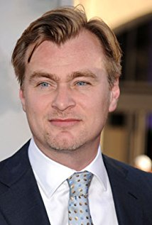
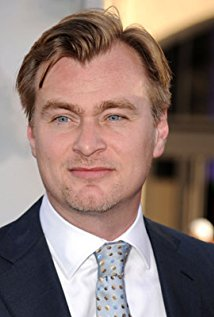
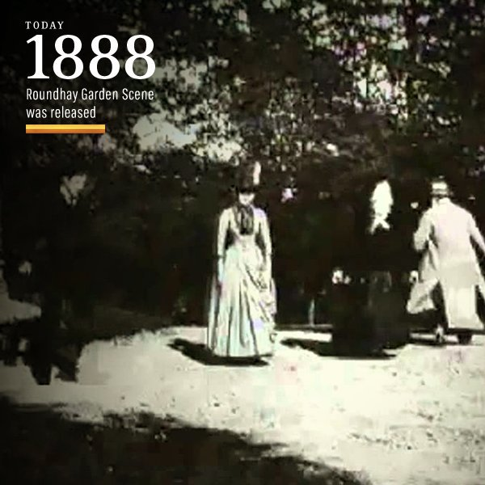
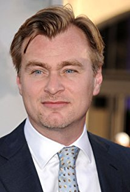

__Movie production companies were soon established worldwide. The first decade of the animation saw a film move back into a well-established collective entertainment industry.
__The oldest films were in black and white, for less than a minute and without a recorded voice.
__During the 1890s films became several minutes long and began to consist of several shots. The first film studios were built in 1897. The first rotary camera for shooting shots was built in 1898. Special effects and film continuity, including moving from sequence to sequence, were introduced and began to be used.
__In the 1900s, continuity was achieved through successive shots and the first close shot was released . Most of the films in this period were so-called "chase movies". The first successful permanent theater featuring only films was "The Nickelodeon" in Pittsburgh in 1905. The first multi-purpose long film was produced by Australia in 1906.
__Roundhay Garden Scene is a short 1888 silent film recorded by French inventor Louis-le-Prince. It is believed to be the oldest surviving film, as noted in Guinness Book of Records
In 2001, the Harry Potter film series began, and by its end in 2011, it had become the highest-grossing film franchise of all time until the Marvel Cinematic Universe passed it in 2015.
As of 2010, the largest film industries by number of feature films produced were those of India, the United States, China, Nigeria and Japan.[70] Beginning in 2008 with Iron Man and The Dark Knight, superhero films have greatly increased in popularity and financial success, with films based on Marvel and DC comics regularly being released every year up to the present
Within eleven years of motion pictures, the films moved from a novelty show to an established large-scale entertainment industry. Films moved from a single shot, completely made by one person with a few assistants, towards films several minutes long consisting of several shots, which were made by large companies in something like industrial conditions. By 1900, the first motion pictures that can be considered as "films" – emerged, and film-makers began to introduce basic editing techniques and film narrative
Famous Producers
J. K. Rowling

Christopher Nolan